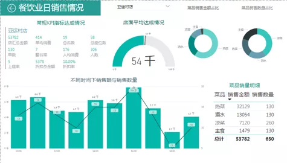
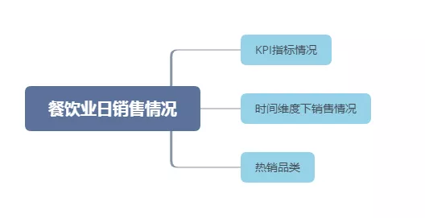
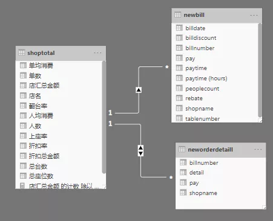
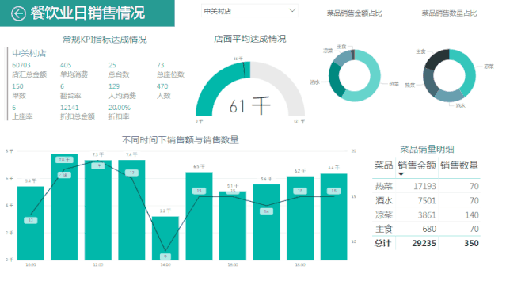

餐饮业日销售情况表

理解数据
-shop
数据来自三个csv文件，包含字段如下：
单号详细： Bill表
| 字段名 | 字段描述 |
|---|---|
| billdate | 日期 |
| billnumber | 单号 |
| shopname | 店名 |
| billdiscount | 会员折扣 |
| paytime | 付费时间 |
| tablenumber | 桌号 |
| peoplecount | 来店人数 |
点菜明细： OrderDetail表
| 字段名 | 字段描述 |
|---|---|
| billnumber | 单号 |
| detail | 菜品明细 |
| pay | 消费金额 |
店面情况： ShopDetail表
| 字段名 | 字段描述 |
|---|---|
| ShopName | 店名 |
| twotable | 二人台数 |
| threetable | 三人台数 |
| fourtable | 四人及以上台数 |
| alltable | 总台数 |
提出问题
根据餐饮业日销售情况详细，拟定从下几个维度建立数据指标。

图中设计KPI指标情况具体见下表：
| KPI | 描述 |
|---|---|
| 销售金额 | 当日店铺实际收入 |
| 折扣额 | 占销售总额的10%-20% |
| 折扣率 | 10%-20% |
| 台数 | 店铺总台(桌)数 |
| 翻台率 | 当日店铺每张桌子被使用的平均次数 |
| 单均消费 | 当日店铺所有缴费单的平均金额 |
| 座位数 | 店铺实际拥有座位的数量 |
| 上座率 | 当日店铺每个座位被使用的平均次数 |
| 人均消费 | 当日到店每个人的平均消费金额(销售总额/客流量) |
| 销售KPI | 每家店的销售金额与所有店的总平均金额的比 |
模型构建
创建单汇总金额表（OrderGroup）
以orderdetail表的billnumber字段为汇总依据，求出每条billnumber下pay的加总值。
create table ordergroup( select billnumber ,sum(pay) as pay from orderdetail group by billnumber);
OrderGroup
| 字段名 | 字段描述 |
|---|---|
| billnumber | 单号 |
| sum（pay） | 金额 |
创建新单号详细表（NewBill）
以billnumber为关键字段关联两表，将OrderGroup表中的pay字段合并到Bill表中，并使用pay与billdiscount字段计算出折扣金额。
create table newbill ( select bill.*, pay，billdiscount * pay as rebate from bill left join ordergroup on bill.billnumber = ordergroup.billnumber);
NewBill
| 字段名 | 字段描述 |
|---|---|
| billdate | 日期 |
| billnumber | 单号 |
| shopname | 店名 |
| billdiscount | 会员折扣 |
| paytime | 付费时间 |
| tablenumber | 桌号 |
| peoplecount | 来店人数 |
| pay | 金额 |
| rebate | 折扣金额 |
创建新店面情况表（NewShopDetail）
在原有shopdetail表字段基础上计算并添加allseats字段.allseats = twotable _ 2 + three _ 3 + fourtable * 6
create table newshopdetail( select *, (twotable*2+threetable*3+fourtable*4) as allseats from shopdetail);
New ShopDetail
| 字段名 | 字段描述 |
|---|---|
| ShopName | 店名 |
| twotable | 二人台数 |
| threetable | 三人台数 |
| fourtable | 四人及以上台数 |
| alltable | 总台数 |
| allseats | 总座位数 |
创建新点菜明细表（NewOrderDetail）
以billnumber为关键字段关联两表，并用Bill表中的shopname与OrderDetail表中的所有字段组成新表
create table neworderdetail( select orderdetail.*,bill.shopname from orderdetail left join bill on bill.billnumber= orderdetail.billnumber);
NewOrderDetail
| 字段名 | 字段描述 |
|---|---|
| billnumber | 单号 |
| detail | 菜品明细 |
| pay | 消费金额 |
| shopname | 店名 |
创建店汇总信息表（ShopTotal）
以shopname字段为关键字段关联两表，并以shopname字段为汇总条件建立表格。
create table shoptotal( select newbill.shopname as 店名, count(newbill.billnumber) as 单数, sum(newbill.peoplecount) as 人数, sum(newbill.rebate) as 折扣总金额, sum(newbill.pay) as 店汇总金额, sum(newbill.pay)/count(newbill.billnumber) as 单均消费, sum(newbill.pay)/sum(newbill.peoplecount) as 人均消费, newshopdetail.alltable as 总台数, newshopdetail.allseats as 总座位数, count(newbill.billnumber) /newshopdetail.alltable as 翻台率, sum(newbill.peoplecount)/newshopdetail.allseats as 上座率, sum(newbill.rebate)/sum(newbill.pay) as 折扣率 from newbill left join newshopdetail on newbill.shopname = newshopdetail.shopname group by newbill.shopname);
ShopTotal
| 字段名 | 字段描述 |
|---|---|
| 店名 | b.shopname |
| 单数 | b.billnumber的计数 |
| 人数 | b.peoplecount的加总 |
| 折扣总金额 | b.rebate的加总 |
| 店汇总金额 | b.pay的加总 |
| 单均消费 | b.pay的合计值/b.billnumber的计数值 |
| 人均消费 | b.pay的合计值/b.peoplecount的合计值 |
| 总台数 | s.alltable |
| 总座位数 | s.allseats |
| 翻台率 | b.billnumber的计数值/s.alltable |
| 上座率 | b.peoplecount的合计值/s.allseats |
| 折扣率 | b.rebate的合计值/b.pay的合计值 |
可视化报表展示

将结果shoptotal，neworderdetail，newbill导入power BI，利用shoptotal.店面，newbill.shopname,neworderdetail.shopname 关联三个表格。制作可视化报表。

可视报表包括常见KPI指标情况，方面阅读者查看日常达成额；店面平均达成情况，结合其他店面平均确认店面销售水平；时间维度下销售额与销售数量情况，方便拟定用餐高低峰期情况；同时有各类菜品销量，销售金额占比及明细表，方便配比菜品，拟定价格。

Copyright © 2020 Powered by Ryan, Theme used GitHub CSS.